How to host website in github pages
GitHub Pages is a static site hosting service that takes HTML, CSS, and JavaScript files straight from a repository on GitHub, optionally runs the files through a build process, and publishes a website.
Before following the steps below you should create an account in Github https://github.com/:
- Login to your Github account
-
On the upper right corner, click the + dropdown. Then, click New Repository
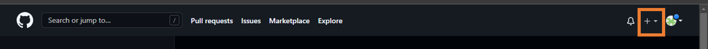 -
Fill up the Repository name with this format [username].github.io

-
Scroll down and click Create Repository
-
Copy the url and open a terminal and type these in the terminal:

-
Navigate to Desktop by typing cd Desktop
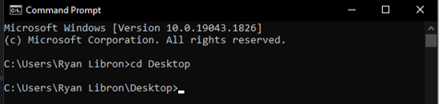 -
Type git clone <url copied earlier>, and you will notice in your desktop that there is newly created folder name <username>.github.io;
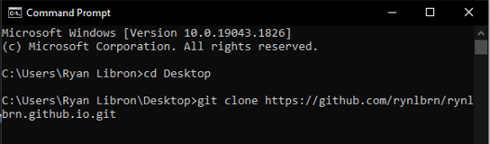 -
Open a text editor and open the folder <username>.github.io and create a file name index.html and type <h1>Sample HTML file</h1> inside the file then save
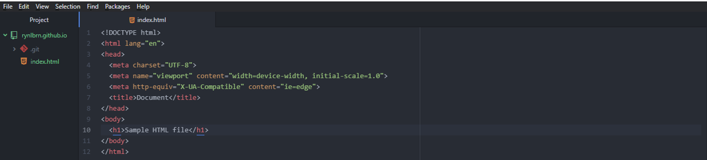 -
Back to the terminal, navigate to the folder by typing cd <foldername>
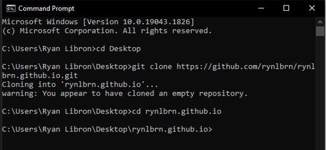 -
Type git init
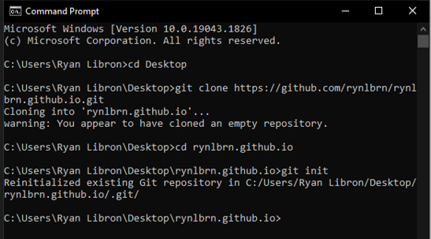 -
Type git add index.html
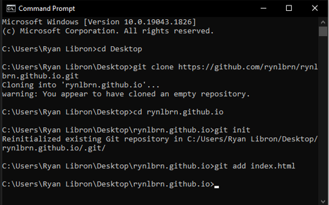 -
Type git commit -m "first commit to github"
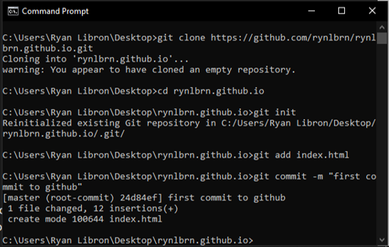 -
Type git remote add origin <url>, you will notice in the terminal there is an error: remote origin already exists but if you don't have this error it is ok just go the next step
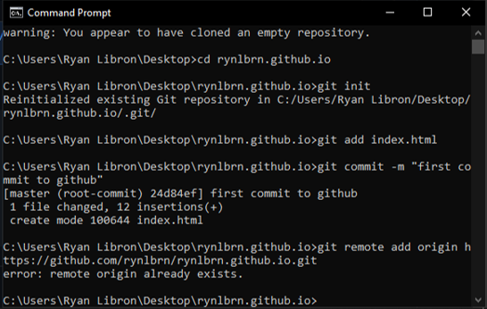 -
Type git push -u origin master, sign in your account using the sign in box that will appear on your window, and when the authentication succeed page appears you can just close it
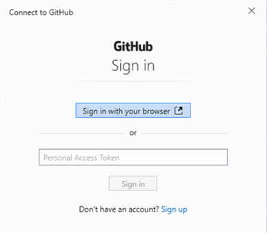 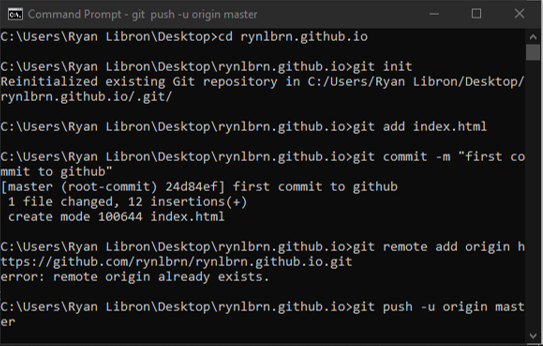 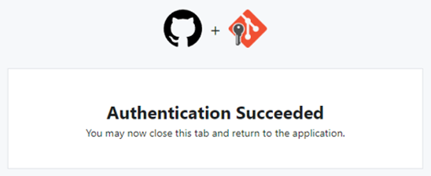 -
Back to github and reload the page and scroll down and look for Environments and click to github-pages
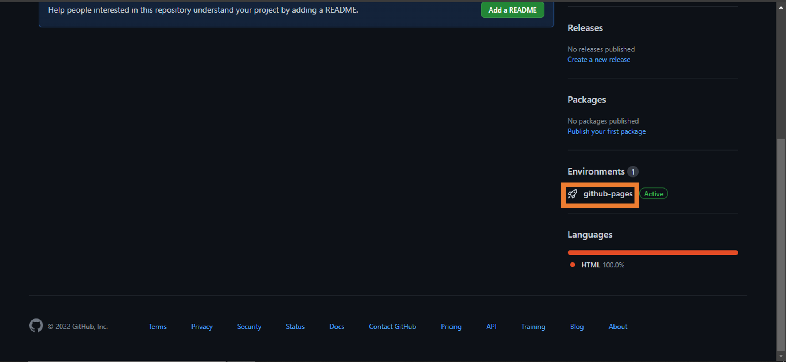 -
Finally, if there is no active sign appears just wait for a few minutes and reload the page until active sign appears, then click View Deployment, and your website will appear (try it on your phone too or other devices)
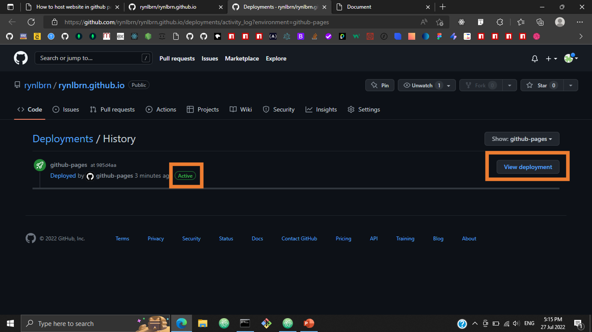
-
Navigate to Desktop by typing cd Desktop